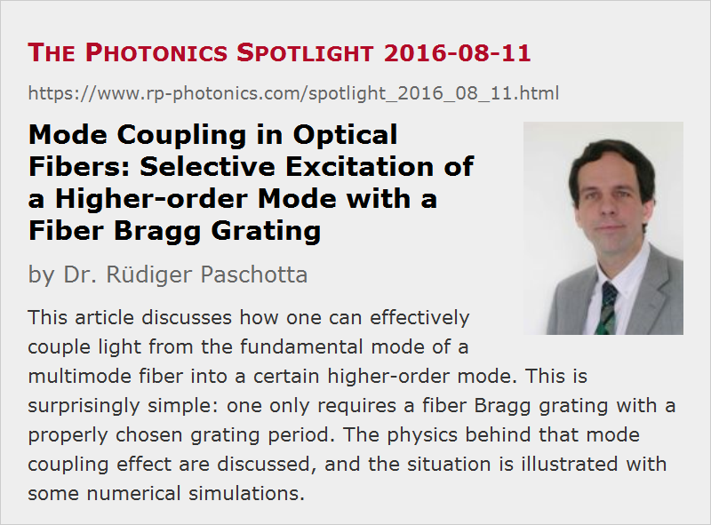

Mode Coupling in Optical Fibers: Selective Excitation of a Higher-order Mode with a Fiber Bragg Grating
Posted on 2016-08-11 as a part of the Photonics Spotlight (available as e-mail newsletter!)
Permanent link: https://www.rp-photonics.com/spotlight_2016_08_11.html
Author: Dr. Rüdiger Paschotta, RP Photonics Consulting GmbH
Abstract: This article discusses how one can effectively couple light from the fundamental mode of a multimode fiber into a certain higher-order mode. This is surprisingly simple: one only requires a fiber Bragg grating with a properly chosen grating period. The physics behind that mode coupling effect are discussed, and the situation is illustrated with some numerical simulations.

Imagine that you have multimode fiber where light propagates in the fundamental guided mode, and you wanted to efficiently transfer that light into some higher-order mode, having a more complicated transverse intensity profile. At a first glance, one may think that this is a really difficult task, requiring a rather complicated kind of optical element which can transform the simple transverse profile of the fundamental mode into some complicated transverse profile.
Interestingly, it turns out that the task can be accomplished quite simply with a fiber Bragg grating. Essentially, you only need to make sure that the grating period d is correctly chosen – such that the magnitude of the grating vector (2π / d) equals the difference of the phase constants of the two involved modes. That will create some coupling between the two modes, such that after a certain propagation distance essentially all light (in the ideal case) will be coupled into the wanted mode. The optical power will sinusoidally oscillate between the two modes; so it will come back to the original mode if you make the Bragg grating too long.
Well, the success also depends on the coupling constant. Essentially, that coupling constant depends on a transverse overlap integral involving the two mode amplitude functions and the phase disturbance introduced by the Bragg grating. In principle, the coupling could be zero e.g. if the involved LP modes had different values of the l index and the phase disturbance were radially symmetric. However, you can easily couple from the fundamental (LP01) mode to any higher-order mode with l = 0, and even to modes with l ≠ 0 if the fiber Bragg grating is somehow asymmetric (e.g. due to writing it with UV light from one side).
It is remarkable that you don't have to care much about the transverse intensity profiles, except that these influence the magnitude of the coupling constant. Essentially, the fiber produces the wanted intensity profile itself. Here are a few more thoughts on how that can work:
Initially, the fiber Bragg grating couples light into many other modes (including even cladding modes). However, for most modes, the above-mentioned Bragg condition is not met; therefore, the contributions to the light in a certain mode, which are generated at different positions along the fiber, are not in phase. As a result, you will never obtain any significant optical power in those modes – only in the one for which the Bragg condition is met quite precisely.
Actually, the situation is similar to resonantly exciting vibrations mode of a mechanical oscillator with a sound wave. That sound wave also does not tell the resonator exactly how to vibrate; the spatial pattern of the vibration is determined by the resonator property, not by the incident sound wave.
For an illustration, I have quickly set up a numerical simulation with our software RP Fiber Power:
- First, I defined the refractive index profile of the fiber, using a supergaussian function for the increase of the refractive index in the region of the fiber core.
- Then I used that as the input for the mode solver, which told me that the highest m value of the guided modes is 5.
- I then decided to couple to the LP04 mode (just as an example) and calculated the difference δβ of the phase constants (β values) of the two modes. That was then used for defining the refractive index profile of the fiber Bragg grating, where the refractive index increase in the core region was modulated with a factor 1 + 0.1 · sin δβ z. (The obtained grating period is 808 μm; we have a long period fiber Bragg grating, having a period much longer than that of a reflecting grating.)
- Finally, I did a numerical beam propagation simulation in that structure, starting with the LP01 mode as the input field. Here is the resulting intensity distribution in the device, seen from the side (i.e., in the y–z plane):
The coupling is not perfect in this case; only ≈90% of the power gets into the LP04 mode. (The above mentioned complete coupling is based on some simplifying assumptions, we which do not need to make for a numerical study.) When trying to obtain the coupling within a shorter length by using a stronger index modulation, this effect becomes substantially more pronounced. Note that the considered fiber has a rather small numerical aperture of 0.076, and in such a case one should apply only a small additional refractive index modulation.
Here I also show the resulting intensity profile at the fiber end:
I also did a test with coupling to the LP02 mode, using a longer grating period of 3.47 mm. Here, the coupling is stronger, such that nearly complete mode conversion is achieved already after a propagation distance of 148 mm:
Of course, it would be quite simple to modify details of the model in order to study some more influences. For example, one could try out asymmetric grating profiles, cases with a stronger index modulation, or check situations in more strongly multimode fibers where nearly degenerate higher-order modes (i.e., with quite similar propagation constants) can occur. Another idea is to introduce some bending of the fiber, which can also modify the propagation constants of the modes. By playing with such a model, one can easily test whether certain original expectations were correct and thus develop a detailed understanding. Besides, such activities give a good chance to create new ideas.
This article is a posting of the Photonics Spotlight, authored by Dr. Rüdiger Paschotta. You may link to this page and cite it, because its location is permanent. See also the RP Photonics Encyclopedia.
Note that you can also receive the articles in the form of a newsletter or with an RSS feed.
Questions and Comments from Users
Here you can submit questions and comments. As far as they get accepted by the author, they will appear above this paragraph together with the author’s answer. The author will decide on acceptance based on certain criteria. Essentially, the issue must be of sufficiently broad interest.
Please do not enter personal data here; we would otherwise delete it soon. (See also our privacy declaration.) If you wish to receive personal feedback or consultancy from the author, please contact him e.g. via e-mail.
By submitting the information, you give your consent to the potential publication of your inputs on our website according to our rules. (If you later retract your consent, we will delete those inputs.) As your inputs are first reviewed by the author, they may be published with some delay.
|  |
If you like this page, please share the link with your friends and colleagues, e.g. via social media:
These sharing buttons are implemented in a privacy-friendly way!